Bus5 B=1 pu · F01
F01 8母線系統の単線結線図

GFMはBus1・2・3・7、slackはBus6、定インピーダンス負荷と並列コンデンサはBus5。全11線路。事故除去時には4–5を開放する。数値を省いた系統構成図。
PNG / PDF / SVG
元ファイル：VSM_decelaration/figures/single_line/schematic
すべてBus5 B=1 pu、H=2.5秒。F31は同じ補償条件でのD1=0探索。PIエネルギー蓄積の検討は含めない。
GFMはBus1・2・3・7、slackはBus6、定インピーダンス負荷と並列コンデンサはBus5。全11線路。事故除去時には4–5を開放する。数値を省いた系統構成図。
PNG / PDF / SVG
元ファイル：VSM_decelaration/figures/single_line/schematic

H=2.5 s、D=10、B5=1 pu、k=0.681273。V5=0.996594 pu。単線図の位相表示は度、線路両端は母線から線路への注入を正とする。
PNG / PDF / SVG
元ファイル：VSM_decelaration/figures/single_line/pre_equilibrium

4–5開放後の安定平衡点。V5=0.857083 pu。事故除去直後でも回転軌道の到達状態でもない。D1=10/20で平衡点の位置は共通。位相は度。
PNG / PDF / SVG
元ファイル：VSM_decelaration/figures/single_line/post_equilibrium
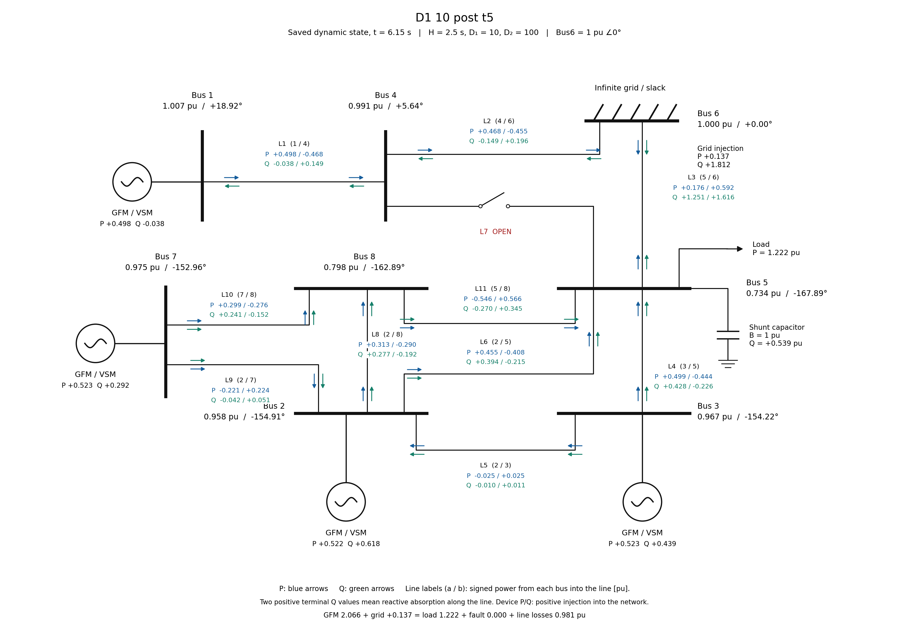
D1=10、絶対時刻6.15秒の実軌道。F05と同時刻。平衡点を示すF03と区別する。位相は度。
PNG / PDF / SVG
元ファイル：VSM_decelaration/figures/single_line/D1_10_post_t5
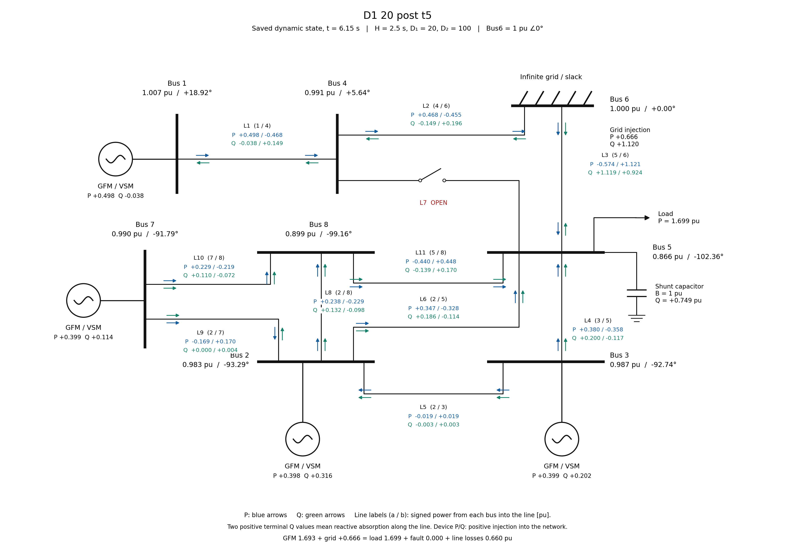
D1=20、絶対時刻6.15秒。F04との違いはD1のみ。回復過程のスナップショットであり最終平衡点そのものではない。位相は度。
PNG / PDF / SVG
元ファイル：VSM_decelaration/figures/single_line/D1_20_post_t5

B5=1、V5_pre=0.996594 pu、H=2.5 s。D1=0.1/10では遠方3機が負方向回転、D1=20では回復。D1変更は比例減衰と定常ドループ勾配の両方に作用する。

各D1で同じ43初期状態を使用。横軸は平均内部角−Bus5電圧位相、縦軸は60 Hz基準の内部周波数偏差。縦軸は横軸の時間微分ではない。実事故軌道は断面外の投影を含む。
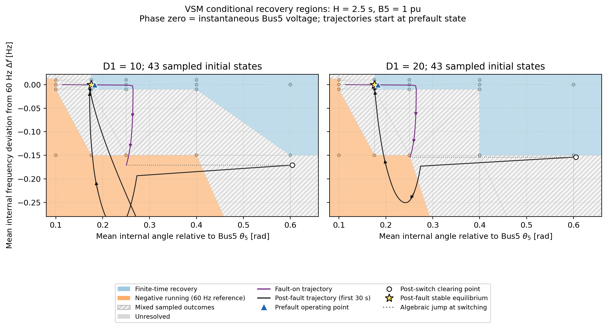
F07の近傍表示。事故前点を原点へ移していない。混在三角形の斜線は未確定の境界域で、厳密な境界線ではない。

F07と同じ初期値・分類をslack Bus6基準の平均内部角で表示。D1=10は左へ進み続け、D1=20は安定点へ近づく。位相はrad、折返しなし。
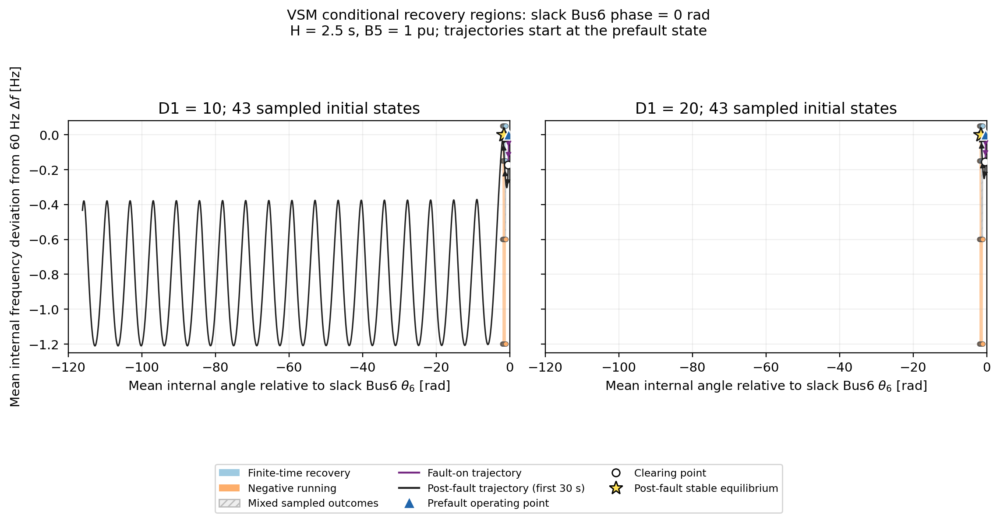
事故後30秒までの共通位相の進行を表示する。有限範囲のBus5相対角からは見えにくいslackとの回転が分かる。背景断面と実軌道の高次元状態は一般に異なる。

Bus5も遠方群とともに動くため、Bus5相対位相が有限範囲でもslackへの回転が継続する。同期の判定基準と表示座標を区別するための図。
PNG / PDF
元ファイル：studies/h2p5_bus5_basins/phase_reference_comparison
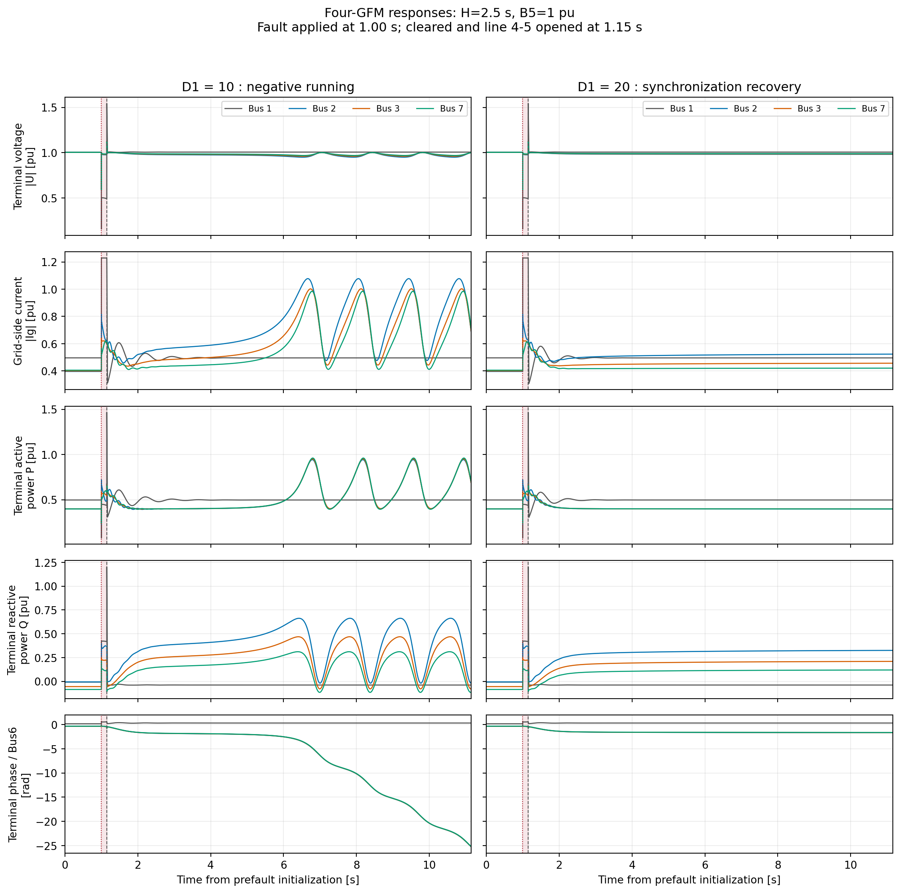
左D1=10、右D1=20。0–11.15秒、事故1.00–1.15秒。電流は系統側Ig、P/Qは母線端子注入、位相はslack基準の端子位相rad。
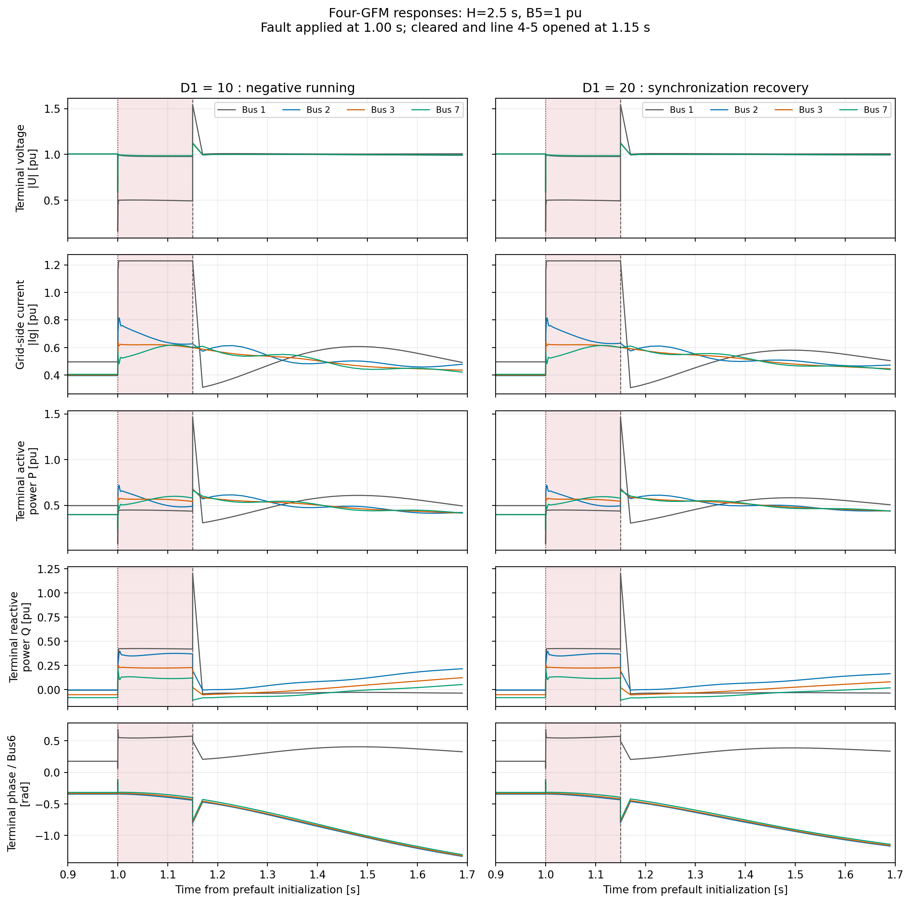
F12の0.9–1.7秒。イベント前後の値を保持。D1=10/20は事故中にも動特性が異なり、除去時の全微分状態が完全同一という比較ではない。
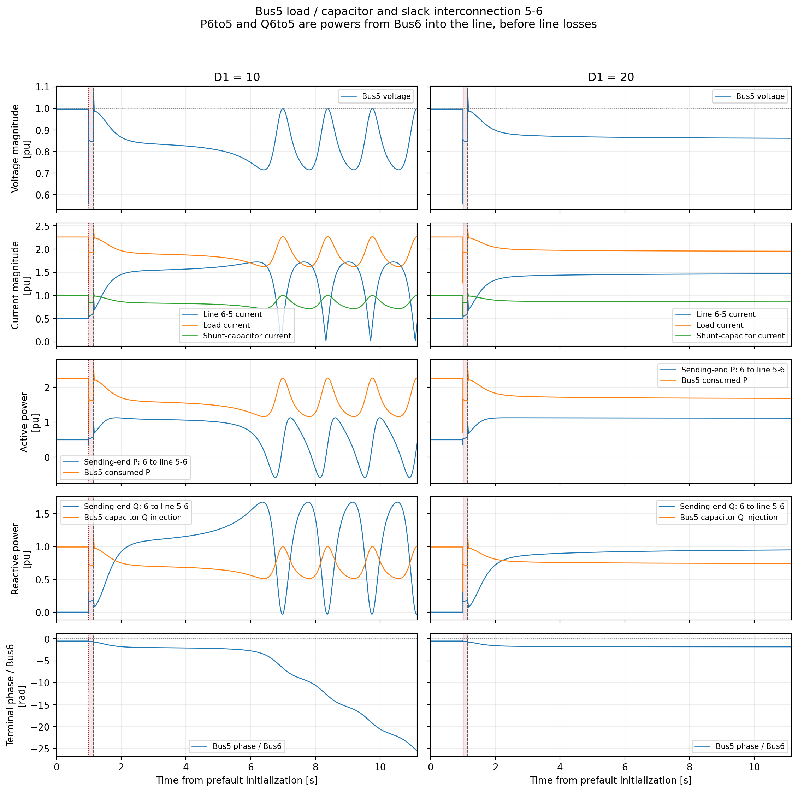
Bus5電圧、負荷・容量補償、5–6の電流・送端P/Q、遠方周波数を比較。P6→5はBus6から線路への注入であり、Bus5受端電力とは異なる。
PNG / PDF
元ファイル：studies/h2p5_short_timeplots/bus5_slack_responses
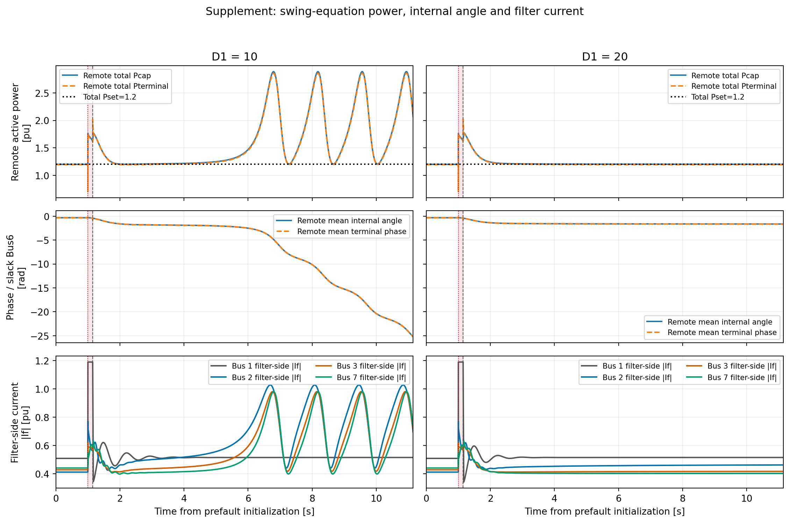
動揺方程式のPcapと端子有効電力、VSM内部角と端子位相、IfとIgの違いを確認する補足図。
PNG / PDF
元ファイル：studies/h2p5_short_timeplots/internal_power_and_current

Q・Igは回転例だけでなく回復例でも増える。初期周波数差、累積位相ずれ、P/Q・電圧の連成として解釈し、Qや電流の増加だけを因果の証明にしない。
PNG / PDF
元ファイル：studies/h2p5_short_timeplots/paired_recovery_comparison

左基準、右R56=0.75 R56,base、X固定。43組で同じ56微分初期状態を使用。回復19→31点、回転24→12点。12点が回転から回復へ変化した。
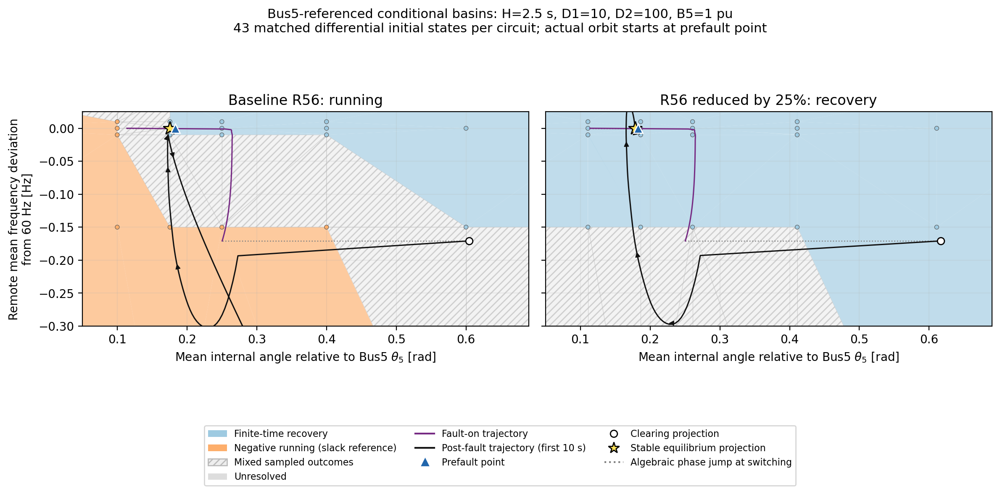
R変更後のBus5代数位相に合わせて横座標を再計算する。両図の同じ横位置が同じ全状態とは限らず、R低減後の安定点は共通初期値断面上とは限らない。

D1=10を共通とし、事故除去時だけR56を25%低減。事故前・事故中と除去時の微分状態は共通。0–11.15秒の同時刻比較。
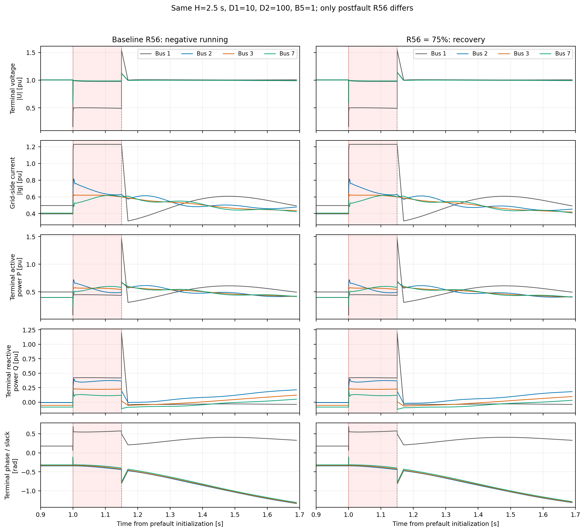
同じ微分状態でも、R変更に伴う代数電圧の差は許容する。系統側電流の変化率が異なる経路を読む図。

4.99秒のV5は0.8070/0.9106 pu、遠方Q合計0.9652/0.3685 pu。R変更は損失・電圧・電力角特性を同時に変えるため、損失だけの独立効果とはしない。
PNG / PDF
元ファイル：studies/h2p5_r56_comparison/bus5_slack_responses
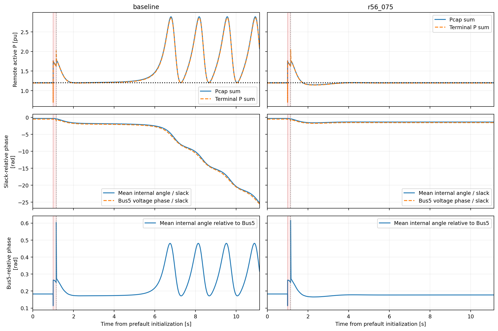
共通位相の進行、Bus5基準の相対位相、動揺方程式で使うPcapを対応付ける。端子PとPcapの違いを保持する。
PNG / PDF
元ファイル：studies/h2p5_r56_comparison/internal_phase_and_power
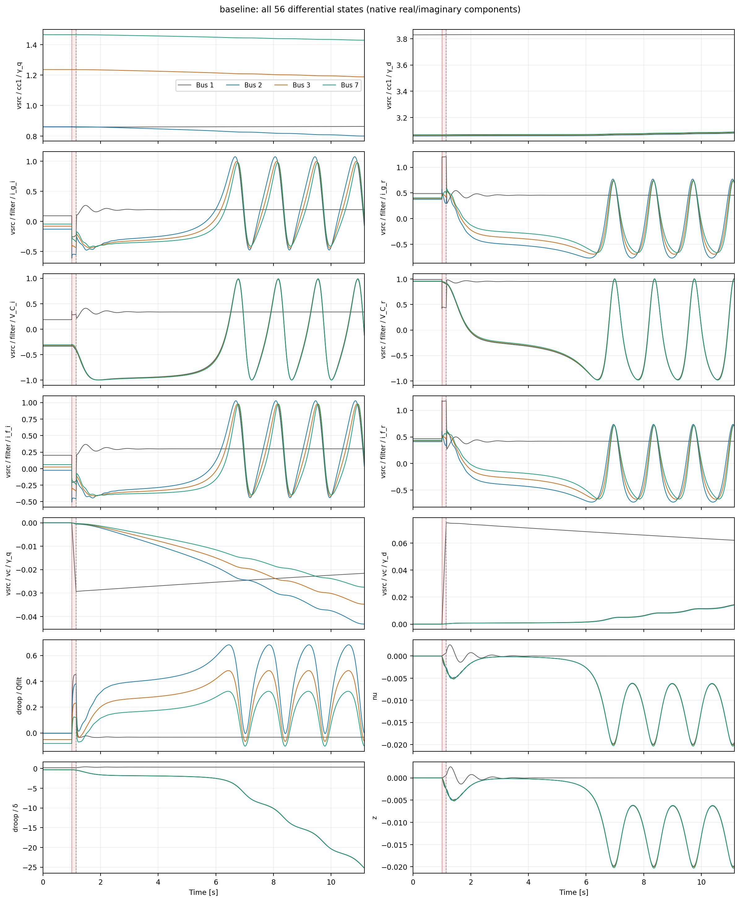
4機×元13状態とD2状態z。旧Pfスロットは実際の周波数偏差νへ変換して表示。電気量の固定座標成分は回転そのものの影響を含む。
PNG / PDF
元ファイル：studies/h2p5_r56_comparison/all_dynamic_states_baseline
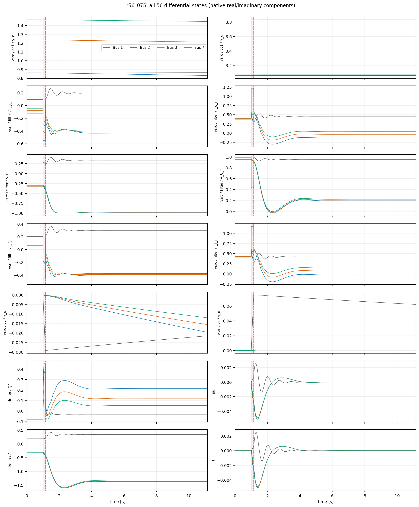
F23と同じ表示定義。回復の分類は位相・周波数の基準であり、全PI状態の完全収束を要求したものではない。
PNG / PDF
元ファイル：studies/h2p5_r56_comparison/all_dynamic_states_r56_075

D1=10/20。遠方Pcap超過と負周波数偏差の釣合い、slackの供給、負荷減少と損失増加を区別する。終盤値は除去後950–1000秒の時間加重平均。

共通の56微分初期状態からR56・X56・全R・4–5接続を変更した8条件、各1000秒。仮想介入による機構検証であり実機操作の提案ではない。
PNG / PDF
元ファイル：studies/h2p5_hypothesis_interventions/interventions

基準の除去20秒後の状態から4条件を各1000秒。R56=0.75や全線路R=0でも回転が続く。介入時刻・初期状態依存性の重要な反例。
PNG / PDF
元ファイル：studies/h2p5_hypothesis_interventions/late_interventions
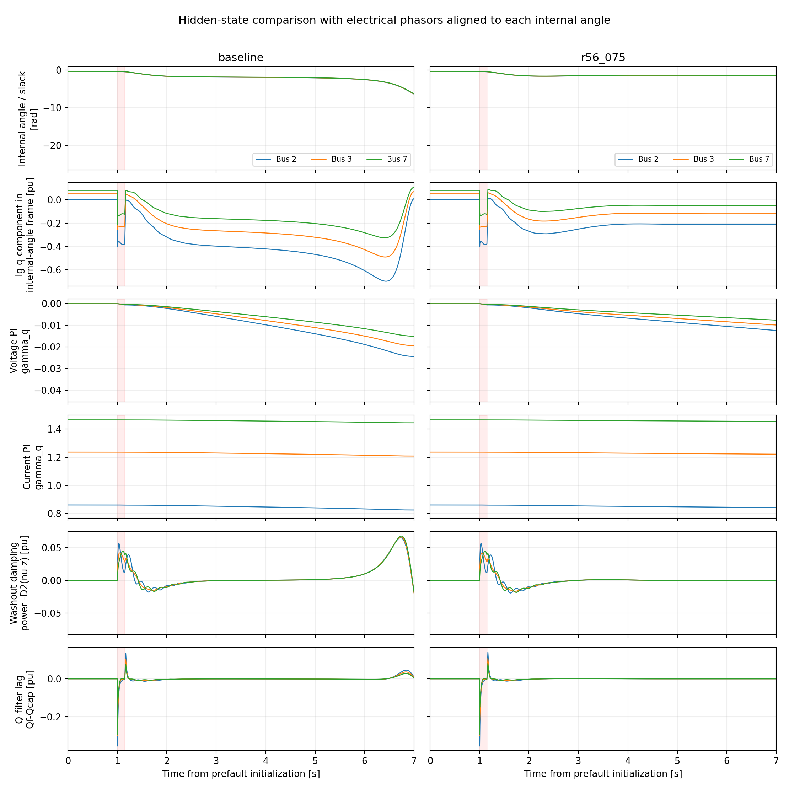
基準とR低減例のQフィルタ、PI状態、電気量の局所座標等。固定座標の位相変化を振幅差と混同しない。PIエネルギーの解析図ではない。
PNG / PDF
元ファイル：studies/h2p5_hidden_state_diagnosis/hidden_states
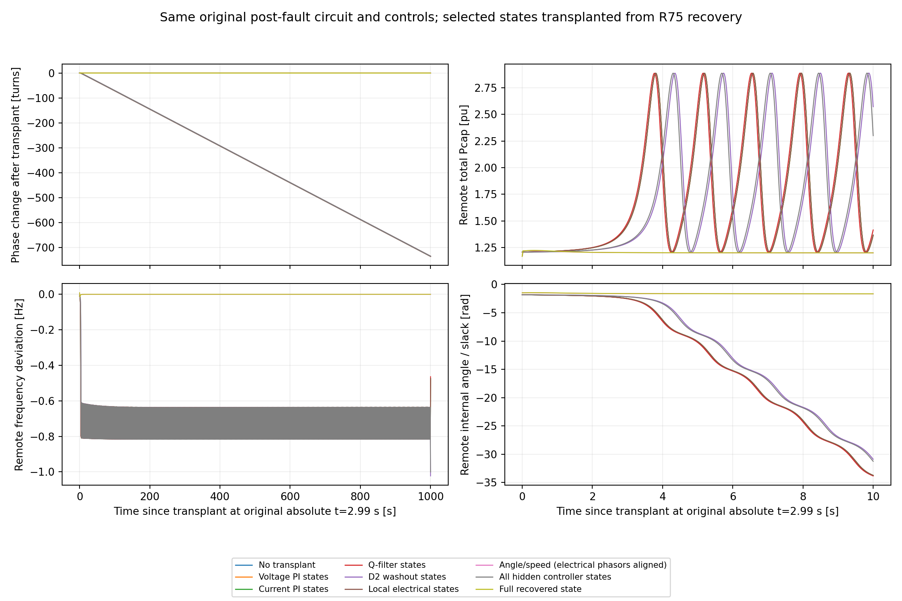
絶対2.99秒に回復例の指定状態群を基準系統へ移植して1000秒。内部角・速度の置換は電気量の位相整合も含む。一時的状態置換で、継続的な制御変更の試験ではない。
PNG / PDF
元ファイル：studies/h2p5_hidden_state_diagnosis/state_transplants

slack基準の角度差0.0315367 rad、Bus5基準では0.000279969 rad。鞍点は正固有値1個、λ=0.0815344 s⁻¹。角度差や局所投影だけを大域的境界の証明にしない。
PNG / PDF
元ファイル：studies/h2p5_hidden_state_diagnosis/equilibrium_projections
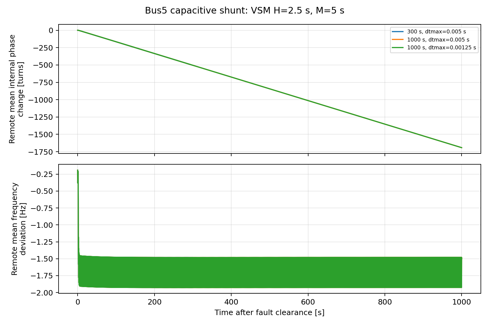
B5=1、k=0.681273、H=2.5 s。V5_pre≥0.98 pu。1000秒基準/細分化で約−1691.483回転。D1=10を用いる主比較に至る探索。
PNG / PDF
元ファイル：studies/h2p5_bus5_voltage098_search/comparison